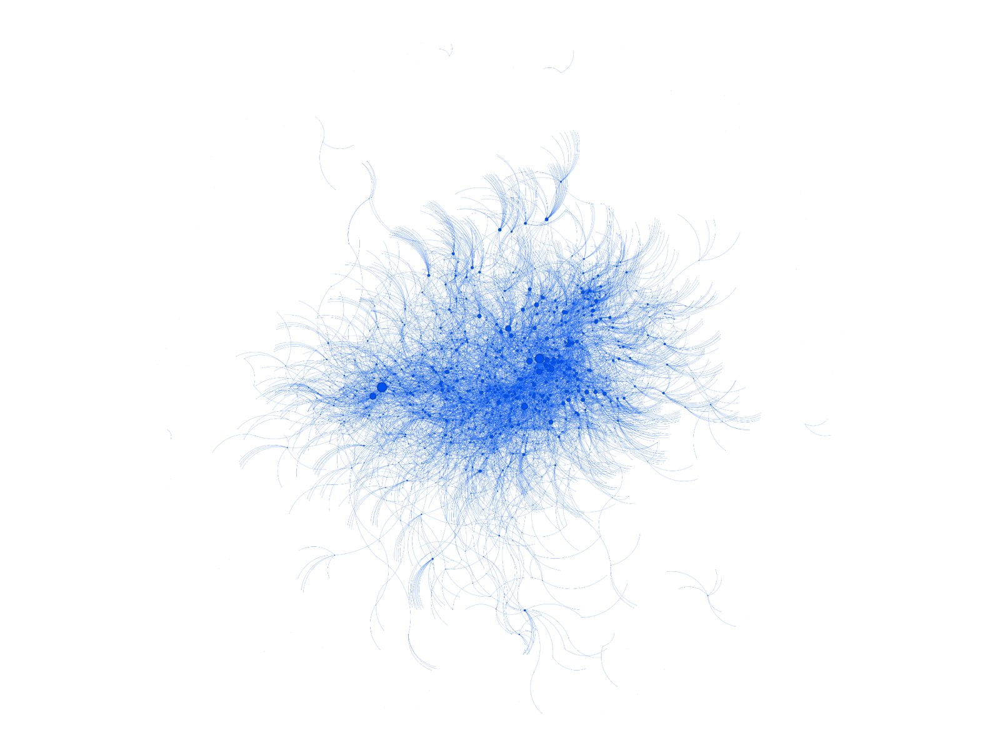
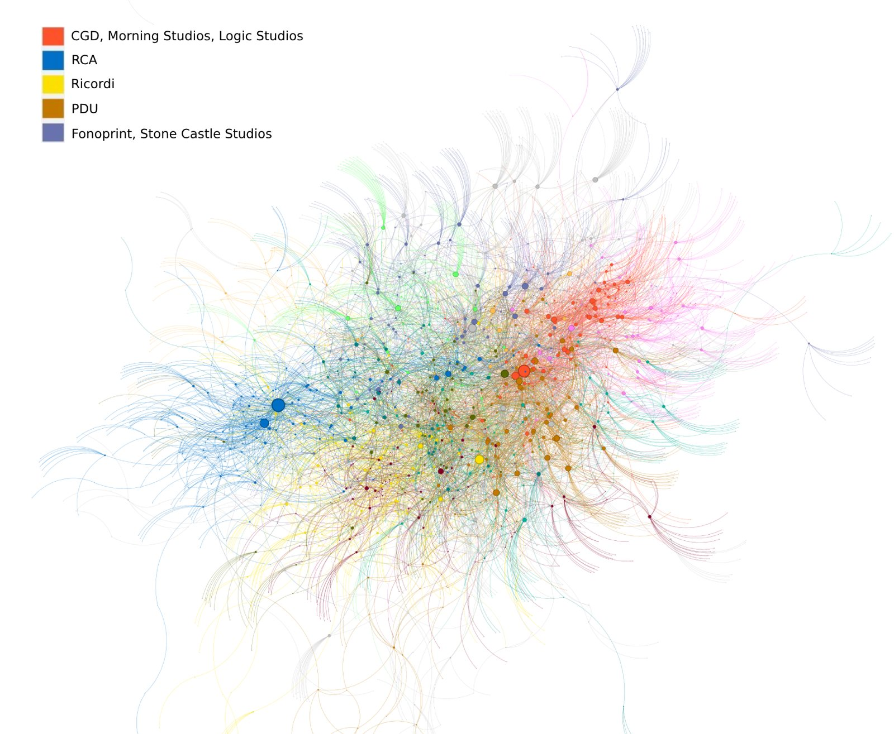

La rete sociale della discografia italiana
I venti album più venduti di ogni anno, dal 1965 al 1999, e i loro paratesti sono le fonti primarie per ricostruire la rete sociale della produzione in studio. Ogni credito di copertina diventa un collegamento.
La rete è multimodale: comprende soggetti individuali (interpreti, musicisti, produttori, arrangiatori, tecnici), soggetti collettivi (gruppi, orchestre, cori), nodi istituzionali (le case discografiche), gli album come progetti che catalizzano le relazioni e gli studi di registrazione, ciascuno dei quali agisce come un focus: un aggregatore di interazioni tra agenti umani e materiali.
Elaborate in Gephi, le matrici ricavate dal corpus producono un grafo di 3410 nodi e 7926 collegamenti: denso all’apparenza, ma con una densità bassissima, segno di un alto grado di omofilia. I nodi si condensano per affinità geografica, stilistica e professionale in cluster locali relativamente stretti.
| Proprietà della rete (Gephi) | Valore |
|---|---|
| Ordine (nodi) | 3410 |
| Edges | 7926 |
| Densità | 0,001 |
| Diametro | 12 |
| Average path length | 5,294 |
| Grado medio | 4,649 |
| Componenti | 8 |
| Modularità | 0,671 |
Tabella 1. La componente principale raccoglie 3385 nodi (99,2%) e 7908 archi (99,7%).

Chi compone la rete
La suddivisione per categorie mette in luce alcune peculiarità. I tecnici del suono sono di gran lunga la categoria più presente, quasi il doppio di studi e produttori, mentre gli addetti al mastering chiudono la lista. Le 93 case discografiche (2,69%) indicano la natura oligopolistica dell’industria; tra i turnisti, i coristi superano chitarristi e tastieristi.
Tabella 2. Numero di nodi per categoria e incidenza percentuale sul totale della rete.
Comunità e confini
L’algoritmo di modularità individua cinque sottogruppi principali, ciascuno con il suo nucleo in una casa discografica e in uno studio di riferimento. Non sono compartimenti stagni: si permeano a vicenda grazie ai soggetti che agiscono all’intersezione. Il confine più netto separa i campi di RCA e CGD, le due principali etichette del periodo.

C’erano tutti questi giri quindi si erano formate delle situazioni proprio ritmiche, ognuno aveva la sua ritmica […] questo qui è un suono della Numero Uno, questa è la Ricordi, questo è un suono della RCA.Ellade Bandini, intervista, 23 maggio 2023
Lo sviluppo nel tempo
Divisa in quinquenni, la rete si espande dagli anni Settanta e si condensa nel decennio successivo. Il 1980–1984 è il momento di massima cooperazione: grado medio più alto (3,83), diametro (8), modularità e path length minimi. Il 1990–1994 è l’unico periodo in cui la rete forma una sola componente, alla vigilia della definitiva affermazione del digitale.

| 1965–69 | 1970–74 | 1975–79 | 1980–84 | 1985–89 | 1990–94 | 1995–99 | 1965–99 | |
|---|---|---|---|---|---|---|---|---|
| Ordine | 316 | 426 | 551 | 659 | 688 | 1094 | 1083 | 3410 |
| Edges | 436 | 657 | 907 | 1262 | 1166 | 1789 | 1709 | 7926 |
| Densità | 0,009 | 0,007 | 0,006 | 0,006 | 0,005 | 0,003 | 0,003 | 0,001 |
| Diametro | 18 | 14 | 11 | 8 | 12 | 10 | 10 | 12 |
| Avg. path length | 6,691 | 5,991 | 5,448 | 4,767 | 5,142 | 5,178 | 5,103 | 5,294 |
| Grado medio | 2,759 | 3,085 | 3,292 | 3,83 | 3,39 | 3,271 | 3,156 | 4,649 |
| Componenti | 7 | 8 | 5 | 3 | 3 | 1 | 3 | 8 |
| Modularità | 0,786 | 0,791 | 0,735 | 0,652 | 0,729 | 0,741 | 0,752 | 0,671 |
Tabella 3. Statistiche whole-network per intervalli di cinque anni. Il dato 1965–1969 risente della scarsità di informazioni nelle note di copertina del periodo.